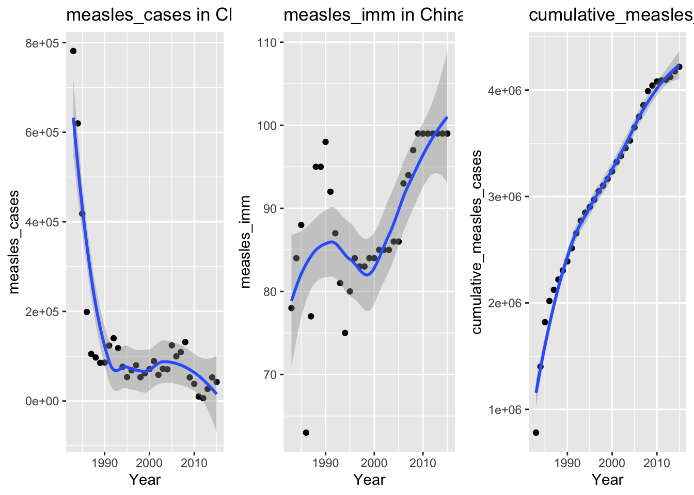

# A tibble: 201 × 25
Entity `mean(...)` `sd(...)` sum(is.na(\BCG immun…¹ sum(is.na(\Hepatitis…²
<chr> <dbl> <dbl> <int> <int>
1 Afghanis… 11844. 1207. 8 33
2 Africa 413125 14930. 0 16
3 Albania 13.9 8.75 0 14
4 Algeria 2850 210. 11 30
5 Americas 22875 3810. 0 13
6 Andorra 0.625 0.5 19 0
7 Angola 10144. 1674. 9 33
8 Antigua … 1 0 42 27
9 Argentina 736. 92.3 6 28
10 Armenia 204. 57.8 2 10
# ℹ 191 more rows
# ℹ abbreviated names:
# ¹`sum(is.na(\`BCG immunization coverage among 1-year-olds (WHO 2017)\`))`,
# ²`sum(is.na(\`Hepatitis B (HepB3) immunization coverage among 1-year-olds (WHO 2017)\`))`
# ℹ 20 more variables:
# `sum(is.na(\`DTP3 immunization coverage among 1-year-olds (WHO 2017)\`))` <int>,
# `sum(is.na(\`Polio (Pol3) immunization coverage among 1-year-olds (WHO 2017)\`))` <int>, …CSS_coursework
Data Exploration and Contextualization
The dataset under analysis, ‘Vaccine Coverage and Disease Burden Statistics’, provided by the WHO, provides detailed statistics associated with a variety of diseases. The variables cover immunization rates amongst one-year-olds, disease incidence, as well as death rates across the globe’s countries and regions, recorded as values per year. For certain variables and countries, coined ’Entity’s in the dataset, the data reaches as early as 1974, and stretches until 2015. No data crosses this range. Thus, the dataset offers valuable insight into public health, proving helpful for social scientists.
Such a dataset can act as a key resource in research on public health’s interlink with other social factors, such as socioeconomics, psychology, culture, etc. @cohen2006. Advantageously, the dataset provides data on both immunization and incidence of certain diseases which severely impacted society, such as polio and measles. Thus, we are able to examine the correlation between immunization and incidence. Social scientists can further use this to their advantage, by examining changes in such variables and their relation with other social factors. Such research can be fed back into medicinal development, and public health related policies.
The means, standard deviations, and missing values were calculated using their respective functions. They were calculated for each Entity in each variable. However, due to the nature of the data being over a period of time, the insight provided by these statistics is limited. An Entity’s mean for one variable which stretches over a period of years oversimplifies the data, and does not demonstrate the changes in the variable, and thus lacks meaning. Similarly, the standard deviation, measuring dispersion from the mean, does not reveal any patterns occurring over time, thus lacking value in the given research focus.
The number of missing values varied between variables and entities, thus throughout the coding process missing values were always removed, in order not to skew the data.
Data Processing and Functional Programming
To avoid any human error in the programming process due to the length of the dataset’s name, it was renamed to ‘ds’, and will be referred to as such from now onward.
As can be seen in the dataset, only two diseases have information on both immunization rates and disease incidence: polio and measles. Thus, these two diseases were selected to observe the correlation between the two variables. As shown below, to tidy the dataset for it to consist of only information needed for the final visualizations, we selected the six variables needed, and renamed those with longer names for simplicity for the remaining coding process.
ds <- ds %>%
select(Entity, Year, `Polio (Pol3) immunization coverage among 1-year-olds (WHO 2017)`, `Measles (MCV) immunization coverage among 1-year-olds (WHO 2017)`, `Number confirmed polio cases (WHO 2017)`, `Number of confirmed measles cases (WHO 2017)`) %>%
rename(
polio_imm = `Polio (Pol3) immunization coverage among 1-year-olds (WHO 2017)`,
measles_imm = `Measles (MCV) immunization coverage among 1-year-olds (WHO 2017)`,
polio_cases = `Number confirmed polio cases (WHO 2017)`,
measles_cases = `Number of confirmed measles cases (WHO 2017)`
)
str(ds)tibble [7,818 × 6] (S3: tbl_df/tbl/data.frame)
$ Entity : chr [1:7818] "Afghanistan" "Afghanistan" "Afghanistan" "Afghanistan" ...
$ Year : num [1:7818] 1974 1975 1976 1977 1978 ...
$ polio_imm : num [1:7818] NA NA NA NA NA NA NA 3 5 5 ...
$ measles_imm : num [1:7818] NA NA NA NA NA NA 11 NA 8 9 ...
$ polio_cases : num [1:7818] NA NA NA NA NA NA NA NA NA NA ...
$ measles_cases: num [1:7818] 7 466 26 28174 43964 ...Due to the extensive number of countries that data is provided for within the dataset, the analysis must be narrowed down. Therefore, it was opted to select the country with the greatest range in case numbers across the years data is provided for. In a country with a large increase in case numbers, an effective immunization system is vital, thus comparing the two with each other, and a cumulative cases visualization helps evaluate whether the variables may correspond, and determine the efficacy of the immunization schedule. Additionally, focusing on a country with a large range allows for a clearer view of visual trends, further easing the comparison.
To achieve this, first, a function to calculate range of cases per Entity had to be written. The pre-existing range function in r returns a vector containing maximum and minimum values, however the aim is to find the difference between the maximum and minimum values, thus a new function had to be written.
Below, is the initial function written. While the general structure works, there is an error in code of the function’s argument. By merely making the argument ‘variable’, the input is detected as an object rather than a variable within ds.
entity_range <- function(variable){ #defines a function with an attempt to use variable names as the argument.
ds %>% #begins data pipeline.
group_by(Entity) %>% #groups the data by country.
summarize(range = max(variable, na.rm = TRUE) - min(variable, na.rm = TRUE)) #calculating the range.
}
#calling the function for polio cases
polio_cases_range <- entity_range(ds$polio_cases)
print(polio_cases_range)# A tibble: 201 × 2
Entity range
<chr> <dbl>
1 Afghanistan 461
2 Africa 461
3 Albania 461
4 Algeria 461
5 Americas 461
6 Andorra 461
7 Angola 461
8 Antigua and Barbuda 461
9 Argentina 461
10 Armenia 461
# ℹ 191 more rowsThus, another attempt is made. This function attempts to use indices as the argument, to instruct the function to access columns via their index position. However, this only returns the maximum values for each entity without providing their range in case numbers.
entity_range <- function(i) { #defines a function which access columns via their index position in the dataset
ds %>%
group_by(Entity) %>%
summarize(range = max(ds[[i]], na.rm = TRUE) - min(ds[[i]], na.rm = TRUE))
}
#followed by the below for calling the function
#function applied to polio cases
polio_cases_range <- entity_range(5) #index position of the polio_cases column is 5
print(polio_cases_range)# A tibble: 201 × 2
Entity range
<chr> <dbl>
1 Afghanistan 461
2 Africa 461
3 Albania 461
4 Algeria 461
5 Americas 461
6 Andorra 461
7 Angola 461
8 Antigua and Barbuda 461
9 Argentina 461
10 Armenia 461
# ℹ 191 more rows#function applied to measles cases
measles_cases_range <- entity_range(6) #index position of the polio_cases column is 6
print(measles_cases_range)# A tibble: 201 × 2
Entity range
<chr> <dbl>
1 Afghanistan 4430074
2 Africa 4430074
3 Albania 4430074
4 Algeria 4430074
5 Americas 4430074
6 Andorra 4430074
7 Angola 4430074
8 Antigua and Barbuda 4430074
9 Argentina 4430074
10 Armenia 4430074
# ℹ 191 more rowsFinally, ChatGPT is consulted in attempt to identify the issue, which proposed several alternative solutions. However, many of them utilized coding far above the module’s content level, and beyond understanding, leaving only fractions of the original code. A solution not too different from the original code was desired. Deciding to return to a code utilizing variable’s names rather than indices due to this being less prone to human error and confusion, the below code was suggested.
entity_range <- function(variable) { #defines a function 'entity_range' which takes variable names as the input.
ds %>% #begins data pipelin.e
group_by(Entity) %>% #groups the data by country.
summarize(range = max(.data[[variable]], na.rm = TRUE) - min(.data[[variable]], na.rm = TRUE))
#'summarize' creates a new summary for each entity.
#'range = ' creates a column within the summary displaying the calculated range of the inputed variable by subtracting the minimum value from the maximum value of the variable.
#'.data[[variable]]' provided by ChatGPT, allows functions to access variables within the dataset dynamically.
#'na.rm = TRUE' removes missing values (NA) when calculation is performed.
}The functions accessing variables within the dataset dynamically means it accesses the column under whichever variable name is input as the argument. If it were not dynamic, the function would be locked to one variable. Additionally, this differs from the original code written as it accesses the input as a variable rather than an object.
Once this function was written, it was applied to the necessary columns, as shown below. The argument must be written as a string to be recognized as a column name rather than an object.
#function applied to polio cases variable
polio_cases_range <- entity_range("polio_cases")
print(polio_cases_range)# A tibble: 201 × 2
Entity range
<chr> <dbl>
1 Afghanistan 63
2 Africa 42
3 Albania 0
4 Algeria 0
5 Americas 0
6 Andorra 0
7 Angola 33
8 Antigua and Barbuda 0
9 Argentina 0
10 Armenia 0
# ℹ 191 more rows#function applied to measles cases variable
measles_cases_range <- entity_range("measles_cases")
print(measles_cases_range)# A tibble: 201 × 2
Entity range
<chr> <dbl>
1 Afghanistan 43972
2 Africa 1376172
3 Albania 136034
4 Algeria 29584
5 Americas 257705
6 Andorra 5
7 Angola 30038
8 Antigua and Barbuda 2291
9 Argentina 42093
10 Armenia 2281
# ℹ 191 more rowsNext, we must select the Entity with the greatest range.
#selecting entity with greatest range in polio cases
max_range_entity_polio <- polio_cases_range%>% #assigns result of the code to a new variable "max_range_entity_polio".
arrange(desc(range)) %>% #arranges the entities in descending order.
slice(1) #selects the first row of the column
print(max_range_entity_polio) #returns the entity in the first row of the column, which is the one with the greatest range due to them being arranged in descending order.# A tibble: 1 × 2
Entity range
<chr> <dbl>
1 Tajikistan 460#selecting entity with greatest range in measles cases
#the same code is applied as above, with one minor difference.
max_range_entity_measles <- measles_cases_range %>%
filter(Entity != "World") %>% #instructs to filter out the row belonging to the Entity 'World'.
arrange(desc(range)) %>%
slice(1)
print(max_range_entity_measles)# A tibble: 1 × 2
Entity range
<chr> <dbl>
1 China 3270348The Entity “World’ is filtered out as it originally was returned as the entity with the greatest range, however we want to focus on countries exclusively. The entities returned, Tajikistan and China, differ hugely in range. Upon observation, Tajikistan only has data for one year of polio cases, thus that value is automatically the range, which happens to be greater than the range of other countries. This lack of data can be attributed to the near eradication of polio worldwide that occurred in the late 20th century (Nathanson and Kew 2010). Thus, due to the number of missing values, data visualizations for this variable would provide a lot less insight into the relationship between immunization and case numbers. Thus, we decided to focus on measles in China specifically. We tidied ds further, to remove unnecessary variables.
ds <- ds %>%
select(Entity, Year, measles_cases, measles_imm) %>%
filter(Entity == "China")
view(ds)As can be seen, China only has data from 1983 onward, so we filter those years.
ds <- ds %>%
filter(Year>1982)
view(ds)For the final piece of wrangling necessary for the data visualization, an additional column is added to the dataset, displaying cumulative cases every year.
ds <- ds %>%
mutate(cumulative_measles_cases = cumsum(measles_cases)) #calculates cumulation of cases per year
view(ds)The visualizations to be made are all scatter plots, with the same X-axis of ‘Year’, and varying Y-axes. Thus, a function was created automating plotting. Repeating the same process three times would be more time consuming and more prone to error, thus creating a function increases efficiency.
create_scatter_plot <- function(i) { #defines a function automating plotting a scatter plot, taking 'i' as an argument, which represents column index.
ds %>%
ggplot(aes_string(x = names(ds)[2], y = names(ds)[i])) + #'aes_string' labels the x and y axes.
#'names(ds)[2]' attributes the x-axis to the column in ds of the second index, which is 'Year'.
#'names(ds)[i]' attributes the y-axis to column 'i', enabling any variable within ds to be used when the function is called.
geom_point() + #plots each piece of data as a point on the graph, creating a scatter plot.
labs( #adds labels to graph
title = glue("{names(ds)[i]} in China per year"), #'glue' combines objects with strings. Here, the object is 'names(ds)[i]' which allows the name of the column at the given index to be used in the title.
y = glue("{names(ds)[i]}") #'glue' dynamically sets the y-axis label as the name of the column at the given index.
) +
geom_smooth() #adds a smooth line of best fit, touching all points of the graph.
}
plots_list <- map(3:ncol(ds), create_scatter_plot) #creates scatter plots iterating from the third column of ds to the last one.Warning: `aes_string()` was deprecated in ggplot2 3.0.0.
ℹ Please use tidy evaluation idioms with `aes()`.
ℹ See also `vignette("ggplot2-in-packages")` for more information.plots_grid <- gridExtra::grid.arrange(grobs = plots_list, ncol = 3) #arranges plots in a grid`geom_smooth()` using method = 'loess' and formula = 'y ~ x'
`geom_smooth()` using method = 'loess' and formula = 'y ~ x'
`geom_smooth()` using method = 'loess' and formula = 'y ~ x'
Figure A (left): measles cases, Figure B (middle): measles imm, Figure C (right): cumulative measles
Interpretation
‘Measles Cases in China Per Year’ shows an overall negative trend, meaning the number of measles cases per year in China has decreased overall between 1983 and 2015. However, there are fluctuations within the data, with a particular plateau between 1994 and 2000, followed by a spurge, until it begins to fall again.
To compare Figure B with Figure A, there is an overall positive trend - measles immunization rates increase throughout the years. However, like Figure A, there are fluctuations. At approximately a similar time to the plateau in Figure A, there is a fall in immunization rates, suggesting a correlation between the two.
Finally, Figure C shows the cumulative cases slow near the end of the data, when the immunization rate begins to reach consistent high rates each year.
These trends, at first glance, although not supported by deeper statistical analyses such as regression, suggest there may be a correlation between immunization rates and disease incidence. Furthermore, the fluctuations within the trends may suggest other factors at play, such as socioeconomic, cultural, etc. Such factors have been shown to have an influence on vaccine uptake hesitancy (Enyinnaya et al. 2024), which would impact disease incidence. Thus, such visualizations can be utilized by social scientists in research on public health and its relationship with other social factors.
AI use
Throughout the computational process, ChatGPT was used as a collaborative tool on certain occasions in various manners. Primarily, it was used to help in understanding of concepts and coding functions taught throughout the module, explaining any gaps in knowledge in a detailed but understandable manner, and making any clarifications needed. Thus, concepts taught in the module were able to be applied to the computational process with more ease. Additionally, ChatGPT was consulted when codes returned errors that were beyond understanding. The AI was able to explain a simplified meaning of the error message, as well as pointing out the problem within the code, allowing for an easier fix.
Decidedly, its use was most impactful in the creation of the entity_range function. While the correct approach was originally taken regarding structure, without ChatGPT’s innovative teaching of the new function ‘.data[]’, the function would ultimately have been more complex and thus prone to error, especially if indices were used. ChatGPT provided several solutions which were all considered, thus allowing for a deeper understanding of various codes, expanding the R-skillset, while ultimately providing a simpler code.
Few issues were encountered when communicating with ChatGPT, with the experience running smoothly overall. Issues primarily stemmed from a lack of detail in questions posed, resulting in sending several messages before receiving the desired response from ChatGPT. As a result, chat threads became long and unorganized, making finding desired information within them time-consuming.
In conclusion, ChatGPT aided both the computational process and learning experience, ensuring full understanding was had, helping reach the interpretation that there is a relationship between measles immunization rates, disease incidence, and cumulative cases, which can be seen via the visualisation.
References
Enyinnaya, Joy C., Ashley A. Anderson, Nicole C. Kelp, Marilee Long, and Colleen G. Duncan. 2024. “The Social Ecology of Health Beliefs and Misinformation Framework: Examining the Impact of Misinformation on Vaccine Uptake Through Individual and Sociological Factors.” Vaccine 42 (3): 455–63. https://doi.org/10.1016/j.vaccine.2024.01.001.
Nathanson, N., and O. M. Kew. 2010. “From Emergence to Eradication: The Epidemiology of Poliomyelitis Deconstructed.” American Journal of Epidemiology 172 (11): 1213–29. https://doi.org/10.1093/aje/kwq320.